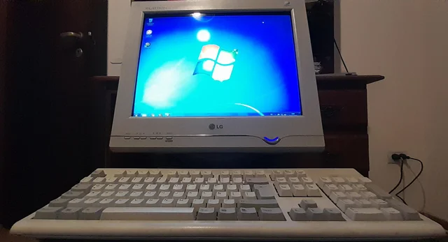

25 de março de 2004
O começo de tudo!

Eu desde cedo sempre fui apaixonado por tecnologia, adorava tudo que girava em torno dessa área, porém quando tive meu primeiro contato com um computador foi algo surreal pra mim, algo naquele momento aconteceu, a luz do que eu queria para meu futuro se acendeu naquele momento. E a partir desse dia eu tinha fixado na mente que assim que eu começasse a trabalhar minha primeira aquisição seria sem sombra de dúvidas um computador. E em 2004, logo após eu conseguir um emprego cumpri essa meta.
Tenho bem fresco na memória até hoje o dia em que fui montar meu PC, um nostálgico Pentium 4 com o saudoso e mais nostálgico ainda Windows XP embarcado (para os mais saudosistas o melhor sistema já feito pela Microsoft) e um lindo monitor Flatron da LG (de tubo). Tudo naquele desktop era lindo pra mim, a emoção de tirar o setup das caixas e ir montando parte a parte foi indescritível. O momento em que apertei pela primeira vez o Power On, o momento em que o sistema carregou...tudo aquilo fazia total sentido pra mim, sentido do que eu queria pra mim.
E foi nesse desktop que aprendi muita coisa, muita coisa mesmo. Na época tudo voltado pra web era muuuito diferente dos dias de hoje, internet então nem se fale, não tem nem como começar uma comparação. Me lembro da internet discada daqueles dias e de deixar o PC ligado a madrugada inteira para poder fazer o download de músicas, vídeo clipes e episódios de animes via torrent, que era uma febre naqueles dias. Como eu era muito curioso, queria aprender de qualquer jeito a formatar o sistema e assim o fiz, e desde então um horizonte se abriu na minha cabeça. Tudo aquilo era muito exclusivo e poucas pessoas sabiam desse processo, para os mais leigos aquilo significava algo de muita inteligência e técnica (o que convenhamos é bem meia verdade).
01 de Março de 2011
Análise e Desenvolvimento de Sistemas
Depois de 2 anos cursando Engenharia de Computação, vi que aquele cursonão era o que eu realmente desejava. Aprendi bastante coisa voltada pra Hardware de computadores, porém eu queria mesmo era aprender a parte de criar e desenvolver o software, escrever o código mesmo. então fiz a mudança de curso e passei a cursar Análise e Desenvolvimento de Sistemas. Nesse curso comecei a ver de fato o que eu queria, algoritmos, lógica, linguagens, programação WEB, e até outras áreas que gosto muito como redes de computadores e sistemas operacionais.
20 de Outubro de 2016
Vida Profissional e continuação na aprendizagem
E depois de termianr o curso de ADS, comecei a procurar vagas de emprego voltadas pra área de desenvolvimento tanto em front-end quanto em back-end e hoje em dia trabalho gerenciando um e-commerce. Tenho diversas funções dentro da empresa, e sou responsável direto pela parte de front-end da empresa. Sou responsável por integrações via API, e controle de integrações...e por esse motivo acabei conhecendo muito sobre diversas plataformas do segmento no mercado, como Vtex e Wordpress só para citar. Agora tenho como objetivo aperfeiçoar ainda mais meus conhecimentos, estudando sobre linguagens, frameworks, e cybersegurança (algo que gosto muito também) para crescer ainda mais tanto pessoalmente quanto profissionalmente.